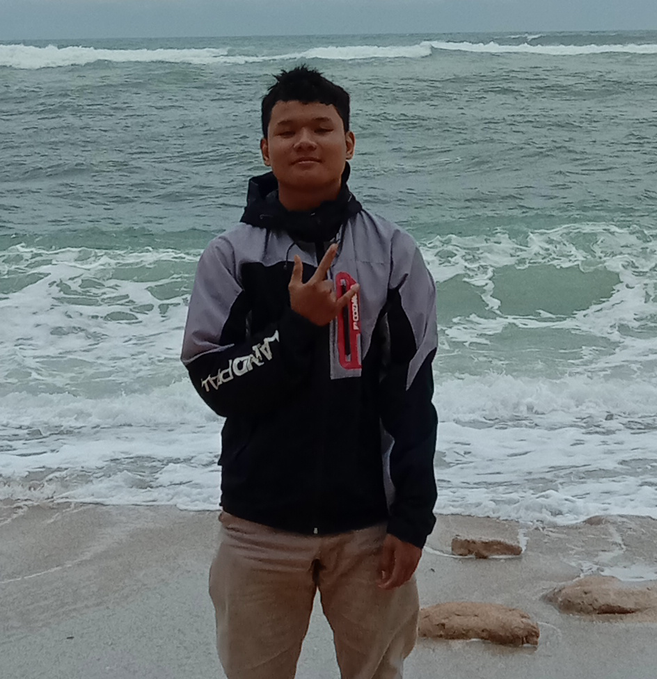

(BackEnd Developer)
Hello! I am Muhammad Agus Arif Setiyo Budi, a passionate Backend Developer and IT enthusiast based in Kabupaten Pasuruan, East Java, Indonesia. I am currently pursuing my education in Software Engineering (Rekayasa Perangkat Lunak - RPL) at SMKN 1 Purwosari, where I am developing comprehensive skills in web development, programming, and software engineering fundamentals.
With a strong foundation in multiple programming languages and technologies, I specialize in backend development while continuously expanding my knowledge in full-stack web development. My expertise spans from low-level systems programming to modern web technologies, demonstrating versatility and adaptability in the ever-evolving tech landscape.
I am committed to continuous learning and professional growth, currently focusing on mastering HTML, JavaScript, PHP, and Python to build robust and scalable web applications. My goal is to contribute to innovative projects while honing my technical skills to become a proficient full-stack developer.
| Technical Skills | Education & Background | Professional Links |
|---|---|---|
|
|
🎯 Learning fundamental web development (HTML, CSS, JavaScript)
💻 Specializing in Backend Development
📚 Studying Software Engineering at SMKN 1 Purwosari
🚀 Building projects to strengthen practical skills
🌐 Exploring PHP and Python for web applications